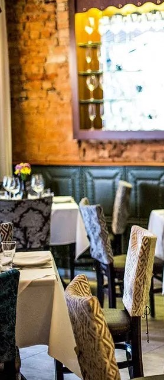
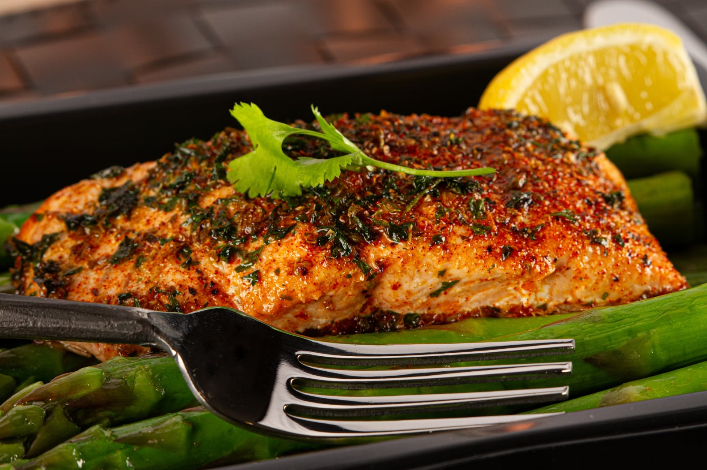
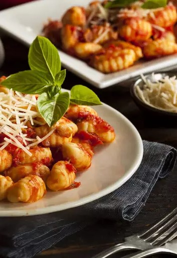
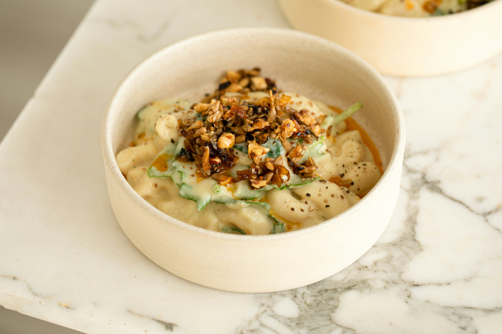
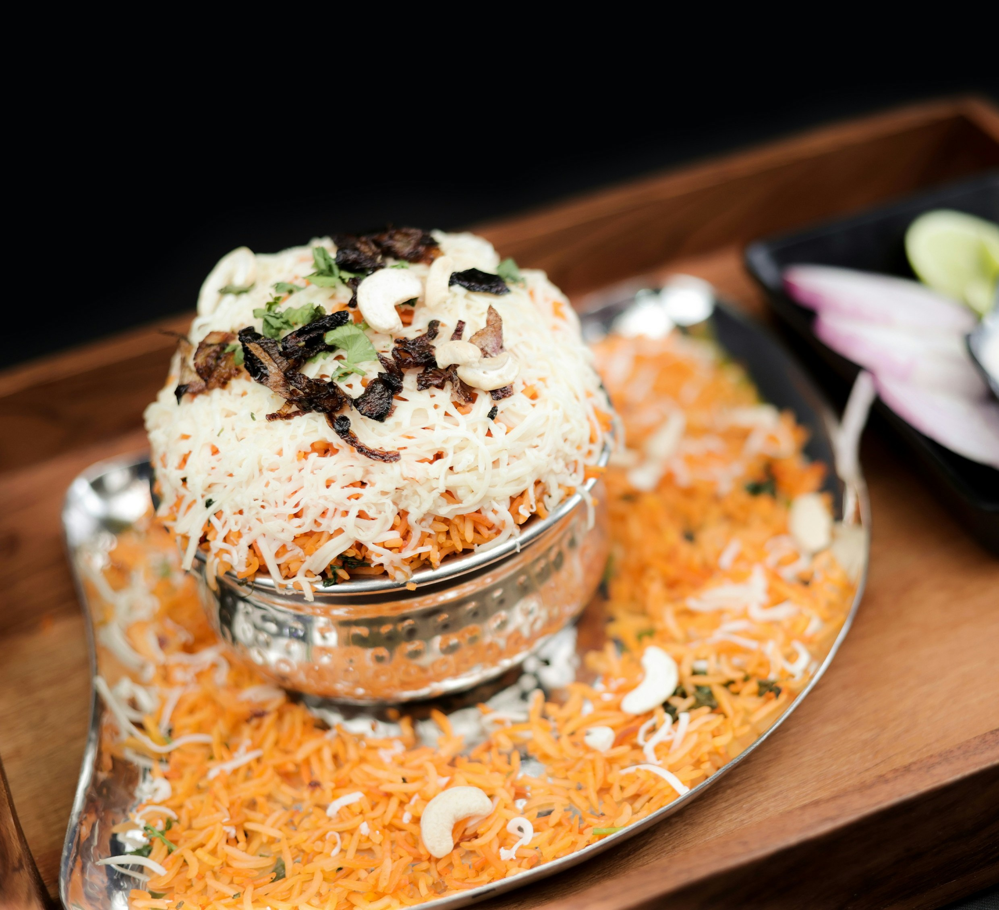
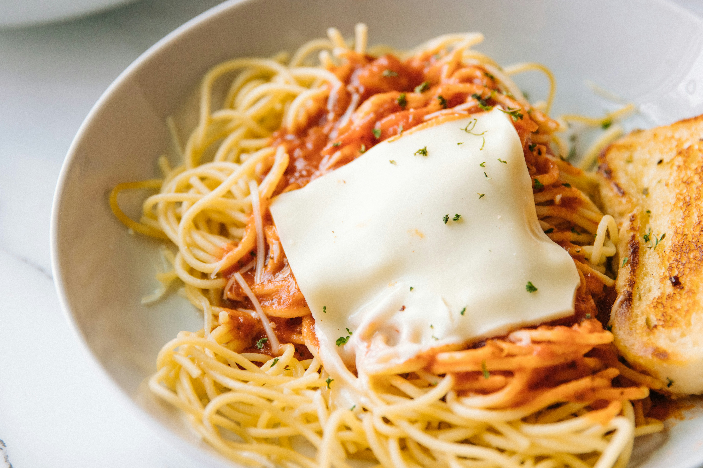
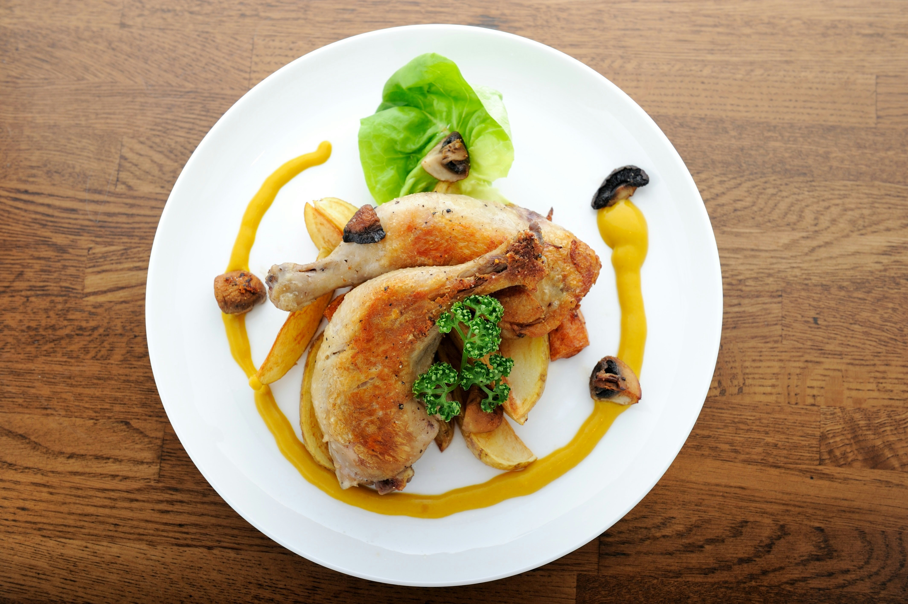
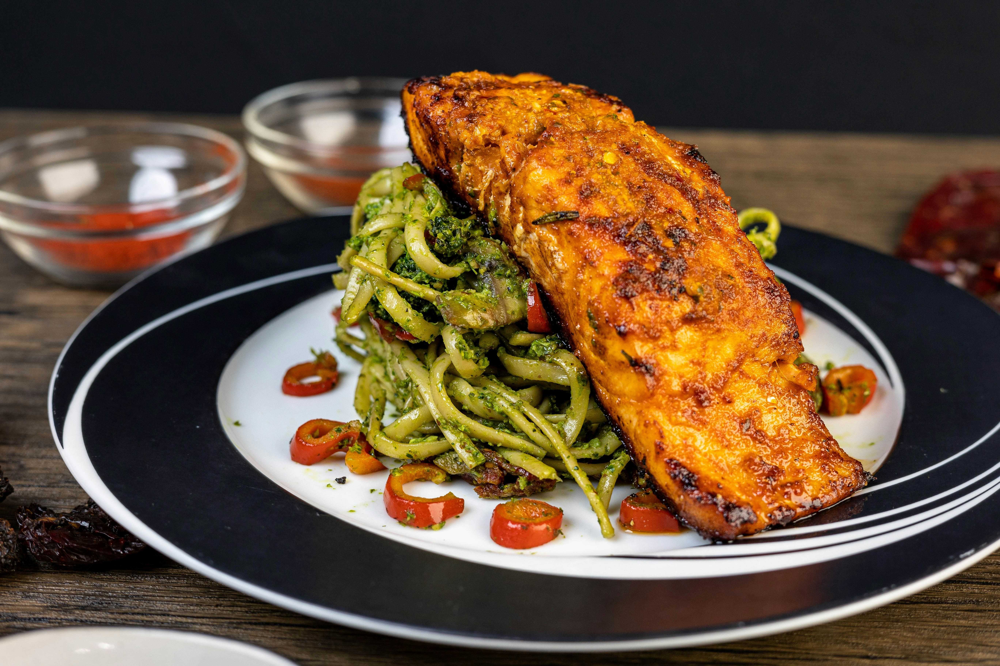
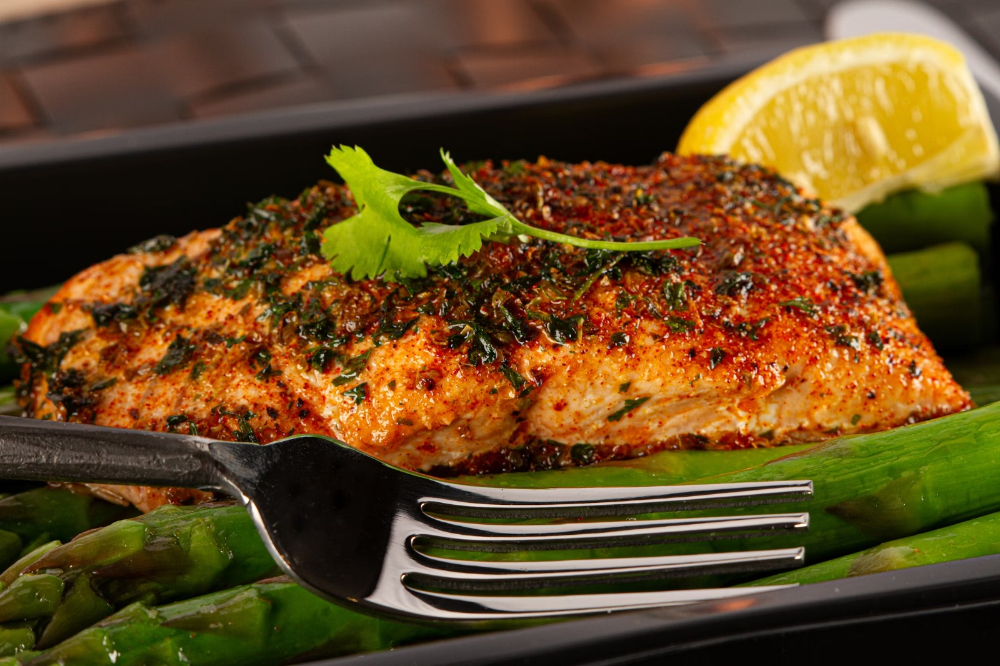
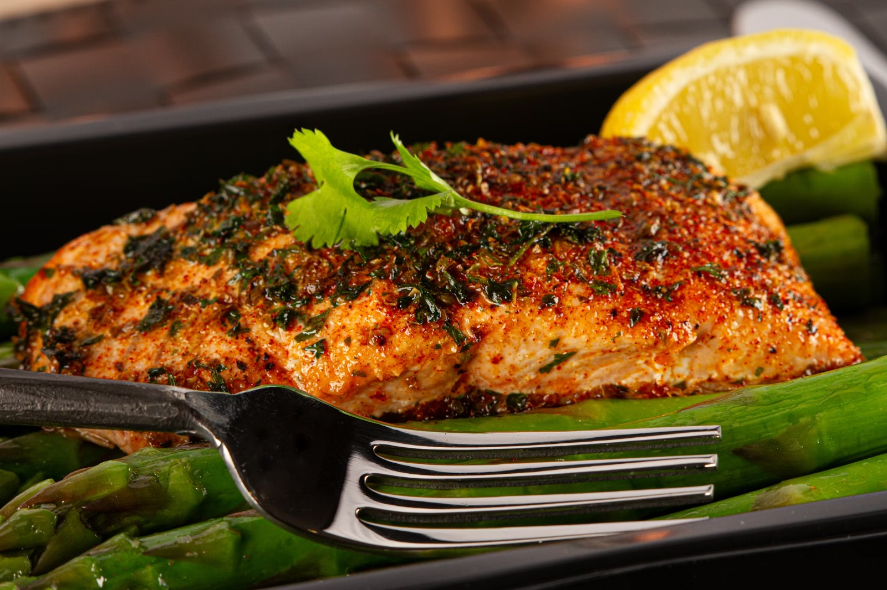

Merci Bistro - Pratos selecionados com alma de cozinha afetiva.
Uma experiência única para você.
Descubra novos sabores a cada semana! Pratos surpreendentes esperam
por você para deliciar-se, de segunda a sábado.

Bem-Vindo ao Merci Bistrô
Somos o Bistrô de uma famía italiana, daquelas bem
grandes que falam auto e são cheia de
amor e receitas deliciosas.
Estamos localizados na
Villa Carrão,bem pertinho do Tatuapé.
Toda nossa família trabalha no
bistrô e você pode ser atendido por um
de nós, conhecer detalhes de nossa
história e denossas receitas,que
muitas aliás, são da nossa Merci mesmo.


Sobre nós
Cozinha internacional
feito à mão: pratos leves , com a mistura de ingredientes
frescos direto da fazenda e do mar para a mesa , além de produtos importados,
selecionado da itália. O caradapio inclui porções bem generosas para
compartilhar.
Tradição familiar, natureza, produção artesanal e modernidade. Uma experiência
que vai além dos prazeres gastronômicos.
Na cozinha , o nosso chefe ,propõe reviver a memóri através dos sabores.
Como protagonista, a conexão brace & mare (a brasa e os frutos do mar), com
toques de ousadia, mas sempre seguindo a proposta descomplicada do nosso
chefe.
Nosso cardápio
Pratos principais do Merci Bistrô

Risoto Merci com Nozes Tostadas
Arroz arbório cremoso com queijo, toque de limão siciliano e nozes crocantes.

Delícia de Chantilly Merci
Camadas de creme, frutas frescas de biscoito com toque de baunilha.

Espaguete alla Merci
Massa al dente ao molho de tomate artesanal com lasca de queijo derretido.

Frango Assado com Batatas e Cogumelos
Coxa e sobrecoxa douradas, servidas com batatas rústicas, cogumelos salteados e purê de abóbora.
Lombo de Bacalhau com Mariscos ao Molho de Açafrão
Peixe grelhado, mariscos, molho cremoso de açafrão, tomates e ervas frescas.

Salmão Grelhado com Espaguete ao Pesto
Filé de salmão ao forno com crosta de especiarias, servido com espaguete ao pesto, pimentas e vegetais salteados.

 13.39.42_e03335b8.jpg) 
